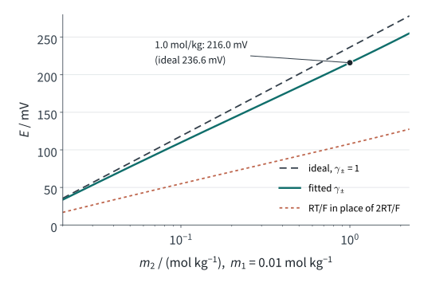
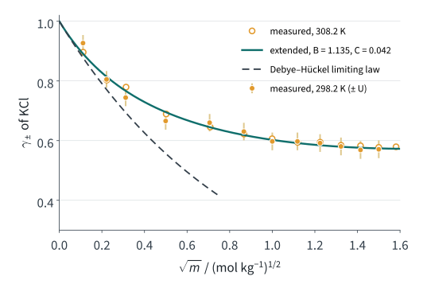

Session 6 of 7 · 180 minutes
Before the midterm Equations of state Fugacity and chemical potential Solution thermodynamics
After the midterm · 7 sessions 1 · VLE and flash 2 · Experimental VLE and consistency 3 · Liquid stability and LLE 4 · Solids and adsorption 5 · Chemical equilibrium 6 · Electrochemical equilibrium 7 · Choosing a model from evidence
Session 5 asked how far a reaction goes. Today a voltage holds the reaction at equilibrium, and the voltage measures ΔrG. That makes the cell one of the most precise instruments for activity coefficients, and one of the easiest to misread.

Two cells Ag|AgCl|KCl(m)|K⁺-ISE at 0.01 and 1.0 mol/kg, in opposition:
ideal 236.6 mV; with measured γ± 216.0 mV.
21 mV is 9 % of the signal. For a battery it is the difference between two states of charge; for a sensor, a factor of 1.5 in concentration.
Writing RT/F where the salt needs 2RT/F halves the answer.
Data: Nasiri-Lohehsara and Ghalami-Choobar, J. Chem. Eng. Data 63 (2018) 2660–2670, via NIST ThermoML. Lab 13 E uses them.
Session 5 Equilibrium of a reaction:
\Delta_rG=\Delta_rG^\circ+RT\ln\prod_i a_i^{\nu_i}=0
Today The same reaction balanced by electrical work:
\Delta_rG=-nFE
Nernst E=E^\circ-\frac{RT}{nF}\ln\prod_i a_i^{\nu_i}
Molality scale, m° = 1 mol/kg.
Where you show it
0–30 Essential concepts Nernst, γ±, Debye–Hückel, dE/dT
30–40 Activity 1 the factor 2
40–60 Demo Lab 13
60–70 Break
70–140 Activity 2 · pair investigation Lab 13 A–B, then E with your own code
140–180 Discussion and exit ticket what a voltage can tell you
Session question A cell voltage is a direct measure of ΔrG. Which parts of it come from concentration, which from nonideality, and which can the data actually resolve?
Before class · 15–20 min Read the note on electrochemical equilibrium. Answer its three questions.
After class · 30–40 min Finish Lab 13 A, B and E, and submit the study file with your name and ID.
Studying on your own? Follow the same order. Turn on narration or captions at the bottom left, and pause at each activity slide.
Every measurable quantity involves a neutral combination of ions, so single-ion activities are not measured. For a 1:1 salt:
a_{\text{KCl}}=a_{\text{K}^+}a_{\text{Cl}^-}=(m\gamma_\pm)^2
A cell that responds to KCl therefore gives
E=\frac{RT}{F}\ln\frac{a_{\text{KCl},2}}{a_{\text{KCl},1}}=\frac{2RT}{F}\ln\frac{m_2\gamma_{\pm,2}}{m_1\gamma_{\pm,1}}
For a salt Mν+Xν−, a = (m±γ±)ν with ν = ν₊ + ν₋.
The pair of cells in opposition cancels E°: only the ratio of activities is measured.
A liquid junction between the two solutions would add a potential set by ion mobilities. The cell pair avoids it; Lab 13’s teaching cell neglects it.

\log_{10}\gamma_\pm=-A|z_+z_-|\sqrt I
A = 0.509 (kg/mol)1/2 at 298 K, log₁₀ basis; 1.172 on the ln basis.
Limiting law At 1.0 mol/kg it gives 0.310; the data give 0.597.
Extended ln γ± = −A√m/(1 + b√m) + cm: b = 1.135, c = 0.042, RMSE 0.022 in ln γ±, close to the data’s ±0.03.
\Delta_rS=nF\frac{\partial E}{\partial T},\qquad \Delta_rH=-nF\Big(E-T\frac{\partial E}{\partial T}\Big)
Ideal concentration cell: E ∝ T, so ΔrH = 0. All the electrical work, 22.8 kJ per mole of KCl at 0.2366 V, is heat drawn from the surroundings.
With real γ±, ∂ln γ±/∂T adds partial molar enthalpies.
KCl, same model fitted at each T
| 298.2 K | 308.2 K | |
|---|---|---|
| b | 1.135 | 1.145 |
| c | 0.042 | 0.045 |
| γ± at 1 mol/kg | 0.603 | 0.606 |
Difference 0.004; uncertainty of each value ±0.03. These data cannot resolve ∂ln γ±/∂T. Calorimetry (heats of dilution) can.
Concentration overpotential
During discharge, the electrolyte near each electrode changes concentration. The equilibrium part of the loss is a concentration cell inside the battery. With γ± from data, not γ = 1, it changes by 9 % in the KCl example and by 37 % in the Week 7 example.
Week 7 example
γ 0.40 and 0.17 reduced a 29.6 mV cell to 18.6 mV: 63 % of the ideal value.
Sensors
An ion-selective electrode reads activity, not concentration. A calibration in dilute standards, read at high ionic strength, misreports concentration unless γ is carried through.
Lab 13 C
How much work before the cell is flat: the discharge study integrates E as the two concentrations approach each other.
Activity 1 · 10 minutes · alone, then with a partner
From the measured KCl data at 298.2 K: γ± = 0.9267 at 0.0124 mol/kg and 0.5974 at 1.0003 mol/kg. Compute the EMF of the cell pair at 298.15 K, ideal and with these γ±.
Then: where does the 2 in 2RT/F come from? How large is the uncertainty in E from ±0.03 in each γ±?
On your own: pause here, write your answer, then go to the next slide.
2RT/F = 0.05139 V at 298.15 K.
Ideal: 0.05139 ln(1.0003/0.0124) = 225.6 mV
With γ±: 0.05139 ln(1.0003 × 0.5974 / (0.0124 × 0.9267)) = 203.0 mV
The 2 comes from (mγ±)²: two ions per formula unit.
Uncertainty from γ± alone: 0.05139 × √[(0.03/0.597)² + (0.03/0.927)²] ≈ 3 mV.
That is larger than the effect of a 10 K temperature change on γ± in these data. Precision, not the model, sets what the cell can tell you.
The fitted model gives 216.0 mV for exactly 0.01 and 1.0 mol/kg.
The limiting law at I = 3 is not a small error. It reverses the cell. A law outside its range does not degrade gracefully.
The teaching cell uses n = 2 for M²⁺/M and molar concentration with c° = 1 mol/L. Step E switches to measured KCl data on the molality scale.
RT/F for a 1:1 salt. aKCl = (mγ±)². Without the square, E is half.
A = 0.509 used with ln. It is a log₁₀ constant; on the ln basis it is 1.172.
The limiting law at high ionic strength. At I = 3 mol/L it reversed Lab 13’s cell.
Reading dE/dT from data that cannot resolve it. A difference of 0.004 in γ± against ±0.03 is noise.
You decide
The assistant may
Write and debug code that does exactly what your specification says. Not property values or conclusions.
Lab 13 step E recomputes from the measured γ±:
It also fits the 308.2 K data, for the discussion.
Next Activity 2: a pair investigation in Lab 13, 70 minutes.
Before you leave your seat, check that Lab 13 opens on your device.
Activity 2 · 70 minutes · in pairs: one drives Lab 13, one checks by hand, then swap
15 min · by hand Ionic strength of 0.1 mol/kg KCl, CaCl₂ and MgSO₄. Limiting-law γ± for each. Which would you trust?
20 min · Lab 13 A–B Activity forms at 0.01 and 1.0; then E, ΔS and ΔH from 278 to 338 K. Save the study.
25 min · E your own code KCl at 298.2 K. Specify, ask an AI assistant for the code, run it, check it in E. Fix what disagrees.
10 min · explain Two sentences with numbers: how much of the 236.6 mV ideal EMF survives nonideality, and how well do you know it?
On your own: do both roles yourself. Pause the slides, work in Lab 13, then continue.
Graduate extension Fit the extended form to both temperatures with b(T) and c(T) linear in T. Is the slope of c distinguishable from zero given the stated U?
Check your results · KCl, 298.2 K
| value | |
|---|---|
| ionic strength, 0.1 mol/kg KCl / CaCl₂ / MgSO₄ | 0.1 / 0.3 / 0.4 |
| limiting-law γ± at 0.0124 mol/kg (KCl) | 0.8776 |
| b / c (ln basis) | 1.1346 / 0.0424 |
| RMSE in ln γ± | 0.0221 |
| γ± at 1.0 mol/kg | 0.6025 |
| EMF 0.01 / 1.0 mol/kg: ideal / fitted | 236.64 / 215.99 mV |
KCl, 298.2 K · a first-draft script
| Lab | Script | |
|---|---|---|
| limiting-law γ±, b, γ± at 1 mol/kg | agree | agree |
| c | 0.0424 | 0.0184 |
| EMF, ideal | 236.6 mV | 118.3 mV |
| EMF with γ± | 216.0 mV | 108.0 mV |
The script fitted on the log₁₀ basis, so its c was cln/ln 10: same fit, different units. It then wrote the cell with n = 1 and a = mγ±, missing the square: every EMF was half.
Fix that made all checks agree
aKCl = (mγ±)², so E = (2RT/F) ln(m₂γ₂/m₁γ₁). Report c with its basis.
The fit was right and the chemistry was wrong. A fitting routine cannot know how many ions the salt has.
All checks agree only shows the code solves your problem. The model is still untested above 2.25 mol/kg and at other T.
Discuss in pairs, then with the class
Cell ΔrG = −nFE. The Nernst equation is reaction equilibrium with electrical work, in activities on a stated scale.
Activities Only neutral combinations are measured: aKCl = (mγ±)². The limiting law is a dilute limit; fit an extended form to data and state its range.
Temperature ΔS = nF dE/dT, ΔH from E and dE/dT. Check that the data resolve the derivative before reporting it.
Session question: of the 236.6 mV ideal EMF, nonideality removes 20.6 mV, known to about ±3 mV from the γ± data. A 10 K change in temperature moves γ± by less than that uncertainty, so these data cannot give the entropy contribution of nonideality.
Next session Choosing a model from evidence: synthesis of Sessions 1–6 and exam preparation.
Exit ticket and feedback · alone · 5 minutes · anonymous
A KCl concentration cell between 0.01 and 1.0 mol/kg measures 0.216 V; the ideal value is 0.237 V. What does the 21 mV tell you, and what would it take to turn it into a temperature derivative of γ±?
Scan the code or open the link. The same form asks three short questions about today: pace, confidence and whether the lab worked.
No name or student ID is recorded. Wait for “Response received.”
Hand in · this week Your Lab 13 study file with A, B and E, name and student ID.
Prepare · Session 7 Review the six exit tickets and your lab files. Session 7 is synthesis and exam preparation.
Optional · graduate Lab 13 C: how much work before the cell is flat? Then repeat E with b and c linear in T.